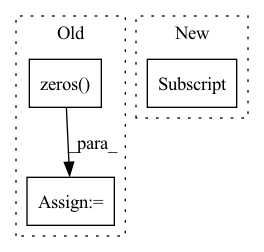

Pattern ID :16
Before Change
enc_h, (h, c) = self.Encoder(embed_enc_inputs, None)
ref = enc_h
query = h.permute(1,0,2).to(device)// query = self.dec_input.unsqueeze(0).repeat(batch,1).unsqueeze(1).to(device)
process_h, process_c = [torch.zeros( (1, batch, embed), device = device) for _ in range(2)]
for i in range(self.n_process):
query, (process_h, process_c) = self.Decoder(query, (process_h, process_c))
query = query.squeeze(1)After Change
enc_h, (h, c) = self.Encoder(embed_enc_inputs, None)
ref = enc_h
// ~ query = h.permute(1,0,2).to(device)// query = self.dec_input.unsqueeze(0).repeat(batch,1).unsqueeze(1).to(device)
query = h[-1]
// ~ process_h, process_c = [torch.zeros((1, batch, embed), device = device) for _ in range(2)]
for i in range(self.n_process):
// ~ _, (process_h, process_c) = self.Decoder(query, (process_h, process_c))
// ~ _, (h, c) = self.Decoder(query, (h, c))In pattern: SUPERPATTERN
Frequency: 7
Non-data size: 3
Instances Fragment ID: 34112
Project Name: rintarooo/tsp_drl_ptrnet
Commit Name: 6e79534a9be0ef30e0f97fcccf1addf22312462c
Time: 2020-11-12
Author: 310rnomeado@gmail.com
File Name: critic.py
M Class Name: PtrNet2
N Class Name: PtrNet2
M Method Name: forward(3)
N Method Name: forward(3)
M Parent Class: nn.Module
N Parent Class: nn.Module
M File Name: critic.py
N File Name: critic.py
M Start Line: 41
M End Line: 51
N Start Line: 45
N End Line: 45
Before Change
k1, k2 = key_layer.chunk(2, dim=(key_layer.ndim - 1))
q1 = self.relative_positions_encoding(q1)
k1 = self.relative_positions_encoding(k1)
position_ids = torch.cat((torch.zeros( q1.shape[2]-1, dtype=torch.long, device=q1.device) ,
torch.arange(1, dtype=torch.long, device=q1.device) + 1))
q2 = self.relative_positions_encoding(q2, position_ids)
k2 = self.relative_positions_encoding(k2, position_ids)
After Change
key_layer = torch.concat([k1, k2], dim=(k1.ndim - 1))
elif self.p_bias == "rotary" and not self.position_encoding_2d: // 原rotary逻辑
query_layer = self.relative_positions_encoding(query_layer, model_kwargs["position_ids"])
key_layer = self.relative_positions_encoding(key_layer, model_kwargs["position_ids"] )
if self.is_decoder:
past_key_value = (key_layer, value_layer)
Fragment ID: 34113
Project Name: tongjilibo/bert4torch
Commit Name: 8bfbd96fd50e1f9cd4f1b422c12ff13cd03e1357
Time: 2023-04-03
Author: tongjilibo@163.com
File Name: bert4torch/layers.py
M Class Name: MultiHeadAttentionLayer
N Class Name: MultiHeadAttentionLayer
M Method Name: forward(6)
N Method Name: forward(6)
M Parent Class: nn.Module
N Parent Class: nn.Module
M File Name: bert4torch/layers.py
N File Name: bert4torch/layers.py
M Start Line: 175
M End Line: 180
N Start Line: 177
N End Line: 183
Before Change
conv_v_img = rearrange(conv_v_img, "B (h Ch) H W -> B h (H W) Ch", h=h) // Shape: [B, h*Ch, H, W] -> [B, h, H*W, Ch].
EV_hat_img = q_img * conv_v_img
zero = torch.zeros( (B, h, 1, Ch), dtype=q.dtype, layout=q.layout, device=q.device)
EV_hat = torch.cat((zero, EV_hat_img), dim=2) // Shape: [B, h, N, Ch].
return EV_hat
After Change
v_img_list = torch.split(v_img, self.channel_splits, dim=1) // Split according to channels
conv_v_img_list = []
for i, conv in enumerate(self.conv_list):
conv_v_img_list.append(conv(v_img_list[i] ))
conv_v_img = torch.cat(conv_v_img_list, dim=1)
conv_v_img = conv_v_img.reshape(B, h, Ch, H * W).transpose(-1, -2)
Fragment ID: 34114
Project Name: feng-lab/pytorch-image-models
Commit Name: 76739a7589ebde1fc6b015e5f9f3e2dc8a73299e
Time: 2021-04-28
Author: rwightman@gmail.com
File Name: timm/models/coat.py
M Class Name: ConvRelPosEnc
N Class Name: ConvRelPosEnc
M Method Name: forward(4)
N Method Name: forward(4)
M Parent Class: nn.Module
N Parent Class: nn.Module
M File Name: timm/models/coat.py
N File Name: timm/models/coat.py
M Start Line: 96
M End Line: 113
N Start Line: 119
N End Line: 137
Before Change
phi = torch.where(cosine > self.th, phi, cosine - self.mm)
// --------------------------- convert label to one-hot ---------------------------
// one_hot = torch.zeros(cosine.size(), requires_grad=True, device="cuda")
one_hot = torch.zeros( cosine.size(), device = "cuda")
one_hot.scatter_(1, label.view(-1, 1).long(), 1)
// -------------torch.where(out_i = {x_i if condition_i else y_i) -------------
output = (one_hot * phi) + ((1.0 - one_hot) * cosine) // you can use torch.where if your torch.__version__ is 0.4
output *= self.s
return output
After Change
cos_theta = cos_theta.clamp(-1, 1) // for numerical stability
with torch.no_grad():
origin_cos = cos_theta.clone()
target_logit = cos_theta[torch.arange(0, embbedings.size(0)), label] .view(-1, 1)
sin_theta = torch.sqrt(1.0 - torch.pow(target_logit, 2))
cos_theta_m = target_logit * self.cos_m - sin_theta * self.sin_m //cos(target+margin) Fragment ID: 34117
Project Name: cavalleria/cavaface.pytorch
Commit Name: 3b84e7dee20887685ce3f9d7a63cb74db35147c3
Time: 2020-04-28
Author: 605370459@qq.com
File Name: head/metrics.py
M Class Name: ArcFace
N Class Name: ArcFace
M Method Name: forward(3)
N Method Name: forward(3)
M Parent Class: nn.Module
N Parent Class: nn.Module
M File Name: head/metrics.py
N File Name: head/metrics.py
M Start Line: 75
M End Line: 88
N Start Line: 80
N End Line: 96
Before Change
// otherwise we need to loop over the batch to account for varying trial lengths
else:
combined_embedding = []
trial_counts = torch.zeros( batch, 1)
for i in range(batch):
// remove NaNs
valid_x = x[i, ~torch.isnan(x[i, :, 0]), :]
trial_counts[i] = valid_x.shape[0]After Change
// Get number of trials from non-nan entries
num_batch, max_num_trials = x.shape[0], x.shape[self.aggregation_dim]
nan_counts = (
torch.isnan(x)
.sum(dim=self.aggregation_dim) // count nans over trial dimension
.reshape(-1)[:num_batch] // counts are the same across data dims
.unsqueeze(-1) // make it (batch, 1) to match embeddings below
)
// number of non-nan trials Fragment ID: 34103
Project Name: mackelab/sbi
Commit Name: 3831fd6d5fda0ca050db8c54868ed30558451042
Time: 2023-03-01
Author: jan.boelts@tum.de
File Name: sbi/neural_nets/embedding_nets.py
M Class Name: PermutationInvariantEmbedding
N Class Name: PermutationInvariantEmbedding
M Method Name: forward(2)
N Method Name: forward(2)
M Parent Class: nn.Module
N Parent Class: nn.Module
M File Name: sbi/neural_nets/embedding_nets.py
N File Name: sbi/neural_nets/embedding_nets.py
M Start Line: 274
M End Line: 300
N Start Line: 279
N End Line: 306
Before Change
values, indices = torch.topk(R, self.n_sortcut)
values = values.reshape(bh, self.n_sortcut, -1)
indices = indices.reshape(bh, self.n_sortcut, -1)
R = torch.zeros( bh, self.n_sortcut, buckets, device=device, dtype=dtype) .scatter(2, indices, values)
return R.softmax(dim=-1) if self.non_permutative else gumbel_sinkhorn(F.relu(R), self.sinkhorn_iter, self.temperature)
After Change
bh, *_, bucket_size, kv_bucket_size, device, dtype, dim = *q.shape, self.bucket_size, self.kv_bucket_size, q.device, q.dtype, self.dim
b = bh // self.heads
buckets = q.shape[1] // bucket_size
kv_buckets = k.shape[1] // kv_bucket_size
b_q = bucket(buckets, q) if self.n_sortcut == 0 else bucket(1, q) Fragment ID: 34120
Project Name: lucidrains/sinkhorn-transformer
Commit Name: 661c2edf85ed877510c714a024b5332299a4ee00
Time: 2020-05-14
Author: lucidrains@gmail.com
File Name: sinkhorn_transformer/sinkhorn_transformer.py
M Class Name: AttentionSortNet
N Class Name: AttentionSortNet
M Method Name: forward(4)
N Method Name: forward(3)
M Parent Class: nn.Module
N Parent Class: nn.Module
M File Name: sinkhorn_transformer/sinkhorn_transformer.py
N File Name: sinkhorn_transformer/sinkhorn_transformer.py
M Start Line: 370
M End Line: 386
N Start Line: 383
N End Line: 402